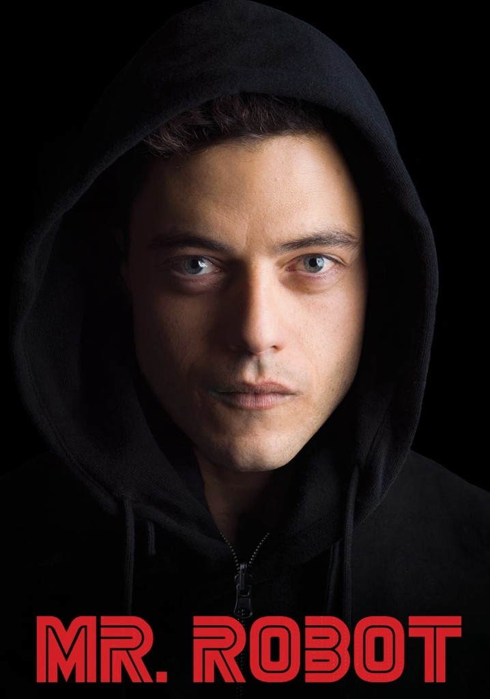

Filmes
Circulo de Fogo (2013)

Criaturas monstruosas conhecidas como Kaiju começam a emergir do mar.
Para combatê-los, a humanidade desenvolve uma série de robôs gigantescos, os Jaegers.
Cada um é controlado por duas pessoas por meio de uma conexão neural.
Genero: Ação e ficção cientifica
Tempo: 2h 11m
Transformers (2007)

O destino da humanidade está em jogo quando duas raças de robôs, os Autobots e os vilões Decepticons,
chegam à Terra. Os robôs possuem a capacidade de se transformarem em diferentes objetos mecânicos
enquanto buscam a chave do poder supremo com a ajuda do jovem Sam.
Genero: Ação e ficção cientifica
Tempo: 2h 24m
G.I. Joe: A Origem de Cobra (2009)

Equipados com as armas de espionagem mais modernas, a equipe de soldados conhecidos como G.I. Joe viaja
para os lugares que mais precisam de seus serviços. Em sua missão mais atual, Hawk, Duke e o resto da
equipe enfrentam Destro, um vendedor de armas corrupto, e lutam contra o crescimento da misteriosa
organização Cobra
Genero: Ação e ficção cientifica
Tempo: 1h 59m
Series
The Pitt (2025)

Uma análise realista dos desafios enfrentados por profissionais de saúde nos EUA, vista pela
perspectiva de heróis da linha de frente em um hospital moderno de Pittsburgh, Pensilvânia.
Genero: drama médico
1 temporada
Mr. Robot (2015)

Elliot é um jovem programador que trabalha como engenheiro de segurança virtual durante o dia, e
como hacker vigilante durante a noite. Elliot se vê em uma encruzilhada quando é recrutado para
destruir a firma que ele é pago para proteger.
Genero: Thriller
4 Temporada
The Boys (2019)

A Terra é habitada por super-heróis que são um inspiração para a humanidade. Porém, esses
protetores têm um lado sinistro que a maioria das pessoas desconhece. Se eles usam seus poderes
para o mal, Hughie, Billy e o resto do time devem detê-los.
Genero: Ação e drama
4 Temporadas